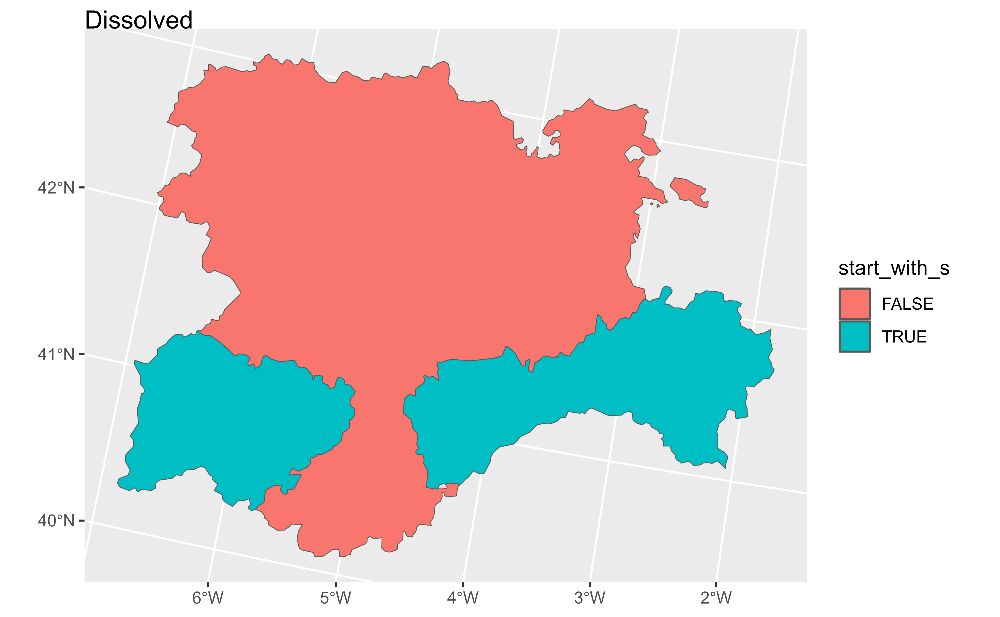
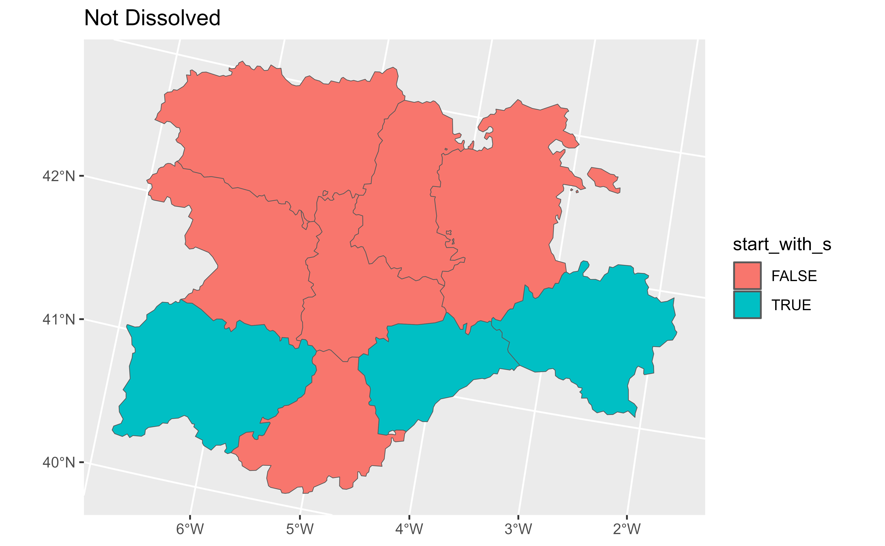

Summarise each group of a SpatVector down to one geometry
Source: R/summarise-SpatVector.R
summarise.SpatVector.Rdsummarise() creates a new SpatVector. It returns one geometry for each
combination of grouping variables; if there are no grouping variables, the
output will have a single geometry summarising all observations in the input
and combining all the geometries of the SpatVector. It will contain one
column for each grouping variable and one column for each of
the summary statistics that you have specified.
summarise.SpatVector() and summarize.SpatVector() are synonyms
Arguments
- .data
A
SpatVector.- ...
<
data-masking> Name-value pairs of summary functions. The name will be the name of the variable in the result.The value can be:
A vector of length 1, e.g.
min(x),n(), orsum(is.na(y)).A data frame, to add multiple columns from a single expression.
Returning values with size 0 or >1 was deprecated as of 1.1.0. Please use
reframe()for this instead.- .by
Ignored on this method (
![[Experimental]](figures/lifecycle-experimental.svg) on dplyr).
on dplyr).- .groups
- .dissolve
logical. Should borders between aggregated geometries be dissolved?
terra equivalent
Methods
Implementation of the generic dplyr::summarise() function.
SpatVector
Similarly to the implementation on sf this function can be used to
dissolve geometries (with .dissolve = TRUE) or create MULTI versions of
geometries (with .dissolve = FALSE). See Examples.
See also
dplyr::summarise(), terra::aggregate()
Other single table verbs:
arrange.SpatVector(),
filter.Spat,
mutate.Spat,
rename.Spat,
select.Spat,
slice.Spat
Other dplyr verbs that operate on group of rows:
count.SpatVector(),
group-by.SpatVector,
rowwise.SpatVector()
Other dplyr methods:
arrange.SpatVector(),
bind_cols.SpatVector,
bind_rows.SpatVector,
count.SpatVector(),
distinct.SpatVector(),
filter-joins.SpatVector,
filter.Spat,
glimpse.Spat,
group-by.SpatVector,
mutate-joins.SpatVector,
mutate.Spat,
pull.Spat,
relocate.Spat,
rename.Spat,
rowwise.SpatVector(),
select.Spat,
slice.Spat
Examples
library(terra)
library(ggplot2)
v <- vect(system.file("extdata/cyl.gpkg", package = "tidyterra"))
# Grouped
gr_v <- v %>%
mutate(start_with_s = substr(name, 1, 1) == "S") %>%
group_by(start_with_s)
# Dissolving
diss <- gr_v %>%
summarise(n = dplyr::n(), mean = mean(as.double(cpro)))
diss
#> class : SpatVector
#> geometry : polygons
#> dimensions : 2, 3 (geometries, attributes)
#> extent : 2892687, 3341372, 2017622, 2361600 (xmin, xmax, ymin, ymax)
#> coord. ref. : ETRS89-extended / LAEA Europe (EPSG:3035)
#> names : start_with_s n mean
#> type : <logical> <int> <num>
#> values : FALSE 6 28
#> TRUE 3 39.67
autoplot(diss, aes(fill = start_with_s)) + ggplot2::ggtitle("Dissolved")

# Not dissolving
no_diss <- gr_v %>%
summarise(n = dplyr::n(), mean = mean(as.double(cpro)), .dissolve = FALSE)
# Same statistic
no_diss
#> class : SpatVector
#> geometry : polygons
#> dimensions : 2, 3 (geometries, attributes)
#> extent : 2892687, 3341372, 2017622, 2361600 (xmin, xmax, ymin, ymax)
#> coord. ref. : ETRS89-extended / LAEA Europe (EPSG:3035)
#> names : start_with_s n mean
#> type : <logical> <int> <num>
#> values : FALSE 6 28
#> TRUE 3 39.67
autoplot(no_diss, aes(fill = start_with_s)) +
ggplot2::ggtitle("Not Dissolved")
